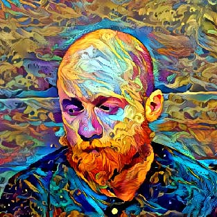
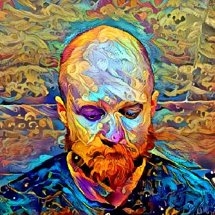
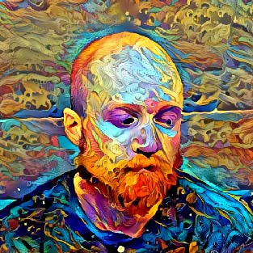
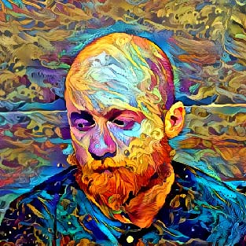
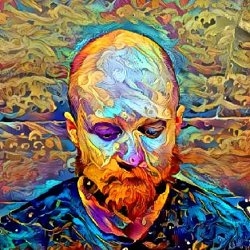
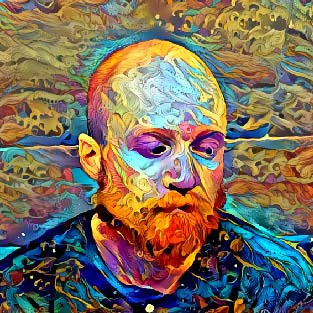

summary and objective
Since honorable discharge from the U.S. Army Engineer Corps in 2014, he has made a living working freelance and contract carpentry while chasing his dream of being a published writer (years from now, maybe a decade). He spent half his G.I.Bill on behavioral health and the other on computer science, and although he has no degree, he puts his people skills and process improvement to work everywhere he goes. He is flexible, adaptable, enjoys learning, and is currently applying for work in skilled labor which both requires skill but includes learning experience.
skills
SOFT
Public Speaking, Writing, Teaching
MAIN STACK
JavaScript, C#, Python
TECHNOLOGIES
Windows, Linux, Github, Data Structures & Algorithms, Bash Scripting, APIs
TRADES
Demolition, preservation of materials, site protection, detailed cleanup.
Rough and Interior Framing, exterior decking, minor in stairs, floor re-leveling.
Concrete, minor forms, mortar mix, door frame pumping, finishing.
Drywall, measuring and cut, hot patching.
Metal, bondo repair, minor arc-welding.
Painting, finishing, calking.
Electrical, RV systems, solar systems, minor appliances and fixtures.
Good at reading labels and has PPE
Exposure to plumbing, roofing, flooring, tile work
TRADE TOOLS OWNED
tape measure, blades, knives, chisels, hammer, power drill, bit set, drill extension and knuckle, drill set, plyers, wire strippers and crimpers, speed square, framing square, files, pry bar size set, screw driver set, mini screw driver set, calk gun and stubs, collecting more all the time! ear/eye/lung/hand/foot/head protection.
experience
| dates | field | position | type |
|---|---|---|---|
| Nov2010 - Nov2014 | carpentry | carpentry & masonry specialist | military |
| 2014 - 2018 | science | student, behavioral and computer | college |
| 2017 - 2019 | rideshare | driver | rideshare |
| May2018 - Sep 2019 | tech | private tutor, programming | freelance |
| Jan2020 - Mar2021 | labor | handyman/carpenter | freelance |
| Nov2020 - May2021 | tech | programmer/consultant | startup |
| Mar2021 - Jul2021 | construction | super's assistant | commercial |
| May2018 - Present | neurotheology | writer | dream big |
references and project photos
on request